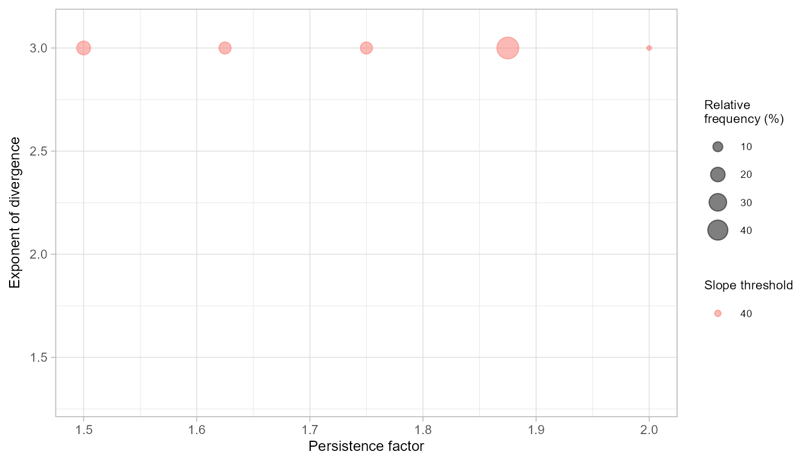

Grid search optimization of runoutSIM with runoptGPP
Jason Goetz
2025-10-16
Source:vignettes/runoutSIM_optimize_w_runoptGPP.Rmd
runoutSIM_optimize_w_runoptGPP.RmdIntroduction
runoptGPP is
an R package developed for optimizing the random walk (path/dispersion)
and PCM (distance) components of mass-movement runout simulations. It
provides functions to perform grid search optimization, evaluate
performance metrics, and visualize results - with support for
runoutSIM.
The optimization follows a two-stage approach:
Optimize random walk model for best path simulation.
Optimize PCM model for best runout distance using the previously optimized path.
Performance is evaluated using AUROC for path accuracy, and relative runout distance error for distance modeling (see Goetz et al. 2021, NHESS).
This vignette covers:
Installing
runoptGPPfrom GitHubFinding optimal global parameters using grid search
Performing spatial cross-validation to assess model sensitivity
Installing runoptGPP
runoptGPP is not currently available on CRAN. To install
it directly from GitHub, use:
remotes::install_github("jngtz/runoptGPP")Loading packages and input data
We begin by loading the required packages, a digital elevation model (DEM), and vector data for debris-flow source points and mapped runout polygons.
# load packages
library(runoutSIM)
library(runoptGPP)
library(terra)
#> Warning: package 'terra' was built under R version 4.4.3
library(sf)
#> Warning: package 'sf' was built under R version 4.4.3
# Load digital elevation model (DEM)
dem <- rast("Data/elev_fillsinks_WangLiu.tif")
# Compute hillshade for visualization
slope <- terrain(dem, "slope", unit="radians")
aspect <- terrain(dem, "aspect", unit="radians")
hill <- round(shade(slope, aspect, 40, 270, normalize = TRUE))
# Load debris flow runout source points and polygons
source_points <- st_read("Data/debris_flow_source_points.shp")
runout_polygons <- st_read("Data/debris_flow_runout_polygons.shp")
# Plot input data
plot(hill, col=grey(150:255/255), legend=FALSE,
mar=c(2,2,1,4))
plot(dem, col=viridis::mako(100), alpha = .5, add = TRUE)
plot(st_geometry(runout_polygons), add = TRUE)Optimizing Random Walk Parameters
Step 1: Define the parameter search space
In our first stage of optimization, we will set up vectors to define our grid search space for the random walk runout path model component. This is an exhaustive list of the parameters that will be tested.
To simulate runout paths, we define a parameter grid for:
rwexp: divergence exponent (controls spread)rwper: persistence factor (controls directionality)rwslp: slope threshold (affects frictional resistance)
steps <- 5
rwexp_vec <- seq(1.3, 3, len=steps) # Expondent of divergence
rwper_vec <- seq(1.5, 2, len=steps) # Persistence factor
rwslp_vec <- seq(20, 40, len=steps) # Slope threshold
rwexp_vec
#> [1] 1.300 1.725 2.150 2.575 3.000
rwper_vec
#> [1] 1.500 1.625 1.750 1.875 2.000
rwslp_vec
#> [1] 20 25 30 35 40Step 2: Parallelize the grid search
We use the foreach and doParallel packages
to speed up model runs by distributing them across multiple CPU cores.
For each mapped runout polygon, all combinations of parameters are
evaluated using the rwGridsearch() function.
Depending on the number of runout events and the grid search space
size, this computation can take some time. The rwGridsearch
function has an option save_res = TRUE that allows us to
save the grid search results for each runout individually. This is
useful in the case where processing fails since it avoids the need to
re-run the grid search for all runout events.
In this example we are creating a limited grid search space (i.e. only 444 possible parameter combinations) to reduce computational time.
library(foreach)
library(raster)
polyid_vec <- 1:nrow(source_points)
n_cores <- parallel::detectCores() -2
cl <- parallel::makeCluster(n_cores)
doParallel::registerDoParallel(cl)
#Coerce dem to raster() dem.
dem <- raster(dem)
rw_gridsearch_multi <-
foreach(poly_id=polyid_vec, .packages=c('terra','raster', 'ROCR', 'sf', 'runoptGPP', 'runoutSIM')) %dopar% {
rwGridsearch(dem, slide_plys = runout_polygons, slide_src = source_points,
slide_id = poly_id, slp_v = rwslp_vec, ex_v = rwexp_vec,
per_v = rwper_vec, gpp_iter = 1000, buffer_ext = 500, buffer_source = NULL,
save_res = TRUE, plot_eval = FALSE)
}
parallel::stopCluster(cl)Step 3: Get the optimal parameters
We extract the optimal parameters across all runouts by aggregating their performance (here, using the median AUROC).
rw_opt <- rwGetOpt(rw_gridsearch_multi,
measure = median)
rw_opt
#> rw_slp_opt rw_exp_opt rw_per_opt rw_auroc
#> 1 40 3 1.875 0.8748927Optimizing PCM Parameters (Runout Distance)
Step 1: Define the parameter space
We now define grid vectors for:
-
pcmmd: mass-to-drag ratio (affects how far material travels) -
pcmmu: sliding friction coefficient
In this example we are creating a limited grid search space (i.e. only 20*10 possible parameter combinations) to reduce computational time.
Step 2: Run PCM grid search in parallel
Here, we re-use parallelization to optimize the PCM model using the previously selected random walk parameters. Each runout is simulated independently.
# Run using parallelization
cl <- parallel::detectCores() -2
doParallel::registerDoParallel(cl)
pcm_gridsearch_multi <-
foreach(poly_id=polyid_vec, .packages=c('terra','raster', 'ROCR', 'sf', 'runoptGPP', 'runoutSIM')) %dopar% {
pcmGridsearch(dem,
slide_plys = runout_polygons, slide_src = source_points,
slide_id = poly_id, rw_slp = 40, rw_ex = 3, rw_per = 1.9,
pcm_mu_v = pcmmu_vec, pcm_md_v = pcmmd_vec,
gpp_iter = 1000,
buffer_ext = NULL, buffer_source = NULL,
predict_threshold = 0.5, save_res = FALSE)
}
parallel::stopCluster(cl)Step 3: Extract optimal PCM parameters
We find the PCM parameter set that results in the lowest
median relative error across all simulated runouts. This gives
us a regionally optimized distance model. The median model performances
across grid search space can be visualized using
plot_opt=TRUE.
pcmGetOpt(pcm_gridsearch_multi,
performance = "relerr",
measure = "median",
plot_opt = TRUE)
#> pcm_mu pcm_md median_relerr median_auroc
#> 1 0.04 40 0.03576527 0.9042586Spatial Cross-Validation of Parameters
To evaluate the sensitivity of our optimal parameters to spatial
sampling, we apply spatial cross-validation using
k-means partitioning from the sperrorest package. This
simulates training/testing under different spatial configurations.
We run 5-fold cross-validation with 10 repetitions using the results from the random walk and PCM grid searches.
par(mfrow = c(1,2))
rw_spcv <- rwSPCV(x = rw_gridsearch_multi, slide_plys = runout_polygons,
n_folds = 5, repetitions = 10)
freq_rw <- rwPoolSPCV(rw_spcv, plot_freq = TRUE)
pcm_spcv <- pcmSPCV(pcm_gridsearch_multi, slide_plys = runout_polygons,
n_folds = 5, repetitions = 10, from_save = FALSE)
freq_pcm <- pcmPoolSPCV(pcm_spcv, plot_freq = TRUE)
freq_rw
#> slp per exp freq rel_freq median_auroc iqr_auroc
#> 1 40 1.500 3 9 18 0.8843889 0.020861264
#> 2 40 1.625 3 7 14 0.8215202 0.080693418
#> 3 40 1.750 3 7 14 0.9083694 0.005970888
#> 4 40 1.875 3 24 48 0.8619509 0.029733802
#> 5 40 2.000 3 3 6 0.8119542 0.000000000
freq_pcm
#> mu md freq rel_freq rel_err iqr_relerr
#> 1 0.04 40 35 70 0.05290689 0.049399707
#> 2 0.05 40 9 18 0.03205946 0.004627829
#> 3 0.07 40 3 6 0.07844790 0.000000000
#> 4 0.09 100 3 6 0.04196954 0.000000000